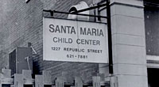
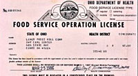
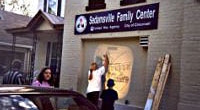
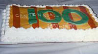

December 8, 1897 – Sisters of Charity of Cincinnati established Santa Maria Italian Educational and Industrial Home, which addressed the urgent needs of Italian immigrants for housing, education, language training, employment, and family stability.
|
1916 |
Santa Maria became a member of the Council of Social Agencies, predecessor of the United Way.
|
1918 |
Santo Bambino Day Nursery opened.
|
1922 |
St. Anthony Welfare Center opened on Queen City Avenue. Services moved to 13th and Republic Streets. Santa Maria flourished offering childcare, recreational and residential services.
|
1941 |
Large number of families arrived from Kentucky and Tennessee seeking employment in the war plants. Services changed emphasis from Italians to the persons who migrated from Appalachia. Many of the Italian families who received help in Santa Maria’s early years took on new roles as volunteers and donors, helping support Santa Maria’s continuing service.
|
1966 |
Services moved to Lower Price
Hill at the request of the Community Chest (now United Way of Greater Cincinnati). Day care services remained at 13th
& Republic. A storefront service center was opened at 2112
Storrs Street. Social services, neighborhood organization efforts, and recreational services
were offered.
|
1969 |
A storefront office opened at the top of Price Hill at 3114 Warsaw with part-time workers offering services to families and youth.
|
1972 |
The Sisters of Charity and the Board of Trustees completed the process of making Santa Maria an independent, not-for-profit agency with full control vested in the Board of Trustees. The name changed to Santa Maria Community Services.
|
1982 |
Board of Trustees formed the Development Board.
|
1987 |
Santa Maria celebrated 90 years
of service. The Family Nurture Center opened at 718 State Avenue. Day Care program at Seton High School transferred
to the YMCA.
|
1988 |
With funds from the City of Cincinnati, the Sedamsville/Riverside Center opened to provide community-based services in isolated neighborhoods.
|
1990 |
Santa Maria focused attention on substance abuse through Appalachians in Recovery program.
|
1992 |
 Purchased the current Warsaw Avenue (3301 Warsaw Avenue) site and renovated it to Purchased the current Warsaw Avenue (3301 Warsaw Avenue) site and renovated it to
consolidate East Price Hill
services and agency
administrative offices in
one facility.
|
1994 |
United Way selected Santa Maria to participate in a three-year pilot program as a Family Resource Center. Prudential HealthCare partnered with Santa Maria providing many volunteers and resources. Purchased the Lower Price Hill Center (718 State Avenue) facility.
|
1995 |
Purchased the Sedamsville
Center (617 Steiner Avenue) facility.
|
1997 |
Santa Maria celebrated its 100th anniversary. Sisters of Charity wrote and performed The End
of the Trail: The Story of Santa Maria. Celebrated the 25th anniversary of Meals-on-Wheels, serving a record 55,074 meals
that year.
|
1998 |
Created the Santa Maria Endowment Fund with a matching gift from Bank One.
|
1999 |
Santa Maria became one of the first agencies to contract with the Every Child Succeeds initiative, providing intensive home visitation services to first-time parents. Moved the agency administrative offices to 639 Steiner Avenue to allow for expanded programming at East Price Hill Family Center.
|
2000 |
Completed major renovation of Lower Price Hill Family Center, 718 State Avenue. Successfully converted to United Way outcomes model for program evaluation.
|
2001 |
Opened the Price Avenue Center at 2918 Price Avenue in East Price Hill to house Meals-on-Wheels and other services. Completed major renovation of the Sedamsville Family Center at 617 Steiner Avenue. Started the Bienestar program, a Hispanic Health Access Initiative.
|
2003 |
Renewed emphasis on neighborhood development and community organizing by moving into the Neighborhood Support Organization model, focused primarily on improving community housing and safety conditions and increasing civic engagement.
|
2005 |
Consolidated office space by moving the administrative offices from 639 Steiner avenue to 2918 Price Avenue. Installed the agency’s first computer network and voice over internet phone system.
|
2007 |
Selected by a group of community investors to lead the early childhood and youth components of place matters Price Hill, a place-based investment strategy to accelerate social and physical change in Price Hill. Celebrated 110th anniversary. Services primarily focused in four areas: Early Child Development and Parenting, Wellness, Housing Programs, Youth Development. |